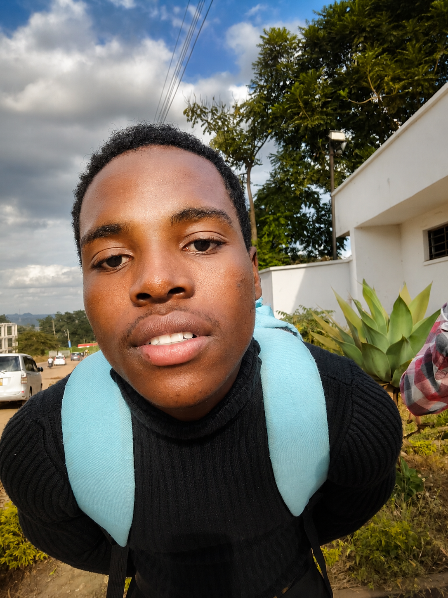

Blessings Tamanga
Software Engineer | Full Stack Developer | IT Professional — Malawi, Africa
I build impactful digital products that blend thoughtful design with technical precision. From modern actor platforms like BrandonSklenar to problem-focused solutions like MzeruCoreHealth_AI, I craft technology that serves communities across Malawi and Africa — working at the intersection of AI, full-stack engineering, and human creativity.


About
I'm a software engineer and web developer with a deep passion for creating intuitive, visually appealing, and impactful digital experiences. My work is not just about writing code — it's about shaping technology that feels natural to interact with, solving real-world problems, and delivering solutions that people genuinely enjoy using. I thrive on transforming complex challenges into simple, elegant applications that empower individuals and organizations to achieve more. For me, every project is an opportunity to merge creativity with technical precision, producing results that are both functional and inspiring.
My background in Business Information Technology gives me a unique perspective that blends technical expertise with business strategy. This allows me to bridge the gap between functionality and design, ensuring that every project is not only technically sound but also aligned with user needs and organizational goals. I approach development with a holistic mindset — considering scalability, performance, and security while never losing sight of the human experience. By combining analytical problem-solving with empathy for the end user, I create solutions that are efficient, reliable, and meaningful in their impact.
Beyond my technical skills, I am driven by a mission to contribute to communities across Malawi and Africa through technology. I believe innovation should be inclusive and accessible, serving as a tool for growth and positive change. Whether it's building scalable platforms for local businesses, experimenting with AI-driven solutions to address healthcare challenges, or mentoring aspiring developers, I aim to craft technology that empowers people and strengthens communities. My vision is to use software as a bridge — connecting ideas, people, and opportunities — and to leave a lasting impact by building digital products that truly matter.
Gallery
 Experience
Experience
Software Developer
2025 - PresentBrandon Sklenar
Develop and maintain full stack web applications for Brandon Sklenar. Collaborate with cross-functional teams to deliver high-quality software solutions using React, TypeScript, and modern backend technologies.
Projects
 MzeruCoreHealth_AI — Healthcare Platform
MzeruCoreHealth_AI — Healthcare Platform
2025
Personal Project - Lead Developer
MzeruCoreHealth_AI is a comprehensive health tracking platform leveraging AI to provide personalized health insights. Built with React, TypeScript, and Python, it features health monitoring, predictive analytics, and a responsive interface designed for accessibility.
BrandonSklenar — Actor Portfolio Platform
2024
Client Project - Full Stack Developer
Built a modern portfolio website for actor Brandon Sklenar featuring responsive media showcases, filmography database, news section, and fan engagement features with optimized performance.
FAQ
I offer full-stack web development, UI/UX design, AI-driven solutions, and IT consulting. Whether you need a business website, an ecommerce platform, or a custom software solution, I can help bring your vision to life.
I work with React, TypeScript, JavaScript, PHP, Python, Node.js, MySQL, and modern web technologies. I also have experience with AI solutions and cloud deployment.
Yes. I work with clients globally from Malawi and use modern collaboration tools to ensure smooth communication and project delivery.
You can contact me through the form below or connect with me via email or LinkedIn. I'll respond as soon as possible to discuss your project.
Timelines depend on project complexity. Small websites may take 1–2 weeks, while larger platforms can take several months.
Yes. I provide maintenance, updates, bug fixes, performance improvements, and feature enhancements after deployment.